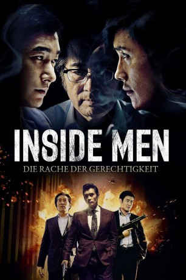

#4235 Inside Men - Die Rache der Gerechtigkeit
Alternativ: Inside Men (Englischer Titel)
 
 IMDB-Wertung: 7.0 / 10
IMDB-Wertung: 7.0 / 10  Metascore: 0
Metascore: 0 
Ahn Sang-goo ist Handlanger und erledigt die wirklich dreckigen Geschäfte für die Mächtigen des Landes. Bald gerät er zwischen die Fronten. Nur zu Lee, einem einflussreichen Verleger, hat er Vertrauen und offenbart ihm Geheimnisse, welche die politische Führung des Landes zu Fall bringen können. Ahn fliegt auf und verliert seine Hand. Im Sumpf von Verbrechen, Korruption und Mord verliert er den Blick für Gut und Böse. Nur Staatsanwalt Woo kämpft an seiner Seite gegen die Mächtigen des Landes, ein Kampf der aussichtslos zu sein scheint...
Jahr: 2015
Dauer: 130 Minuten
FSK: 16
Land: Süd-Korea Studio: Splendid FilmTonspuren:
Untertitel: Deutsch,
Auflösung: 1080p (1920x1040) Größe: 6789 MB
Genre: Krimi, Drama, Thriller
Regisseur: Min-ho Woo
Drehbuch: Kurando Mitsutake
Soundtrack:
Darsteller:
 Byung-hun Lee als An Sang-gu
Byung-hun Lee als An Sang-gu- Seung-woo Cho als Woo Jang-hoon
- Yun-shik Baek als Lee Gang-hee
 Kyeong-yeong Lee als Jang Pil-woo
Kyeong-yeong Lee als Jang Pil-woo- Seong-woo Bae als Park Jong-pal
- Jae-yoon Jo als Bang
- Dae-Myung Kim als Go
- Hong-pa Kim als Oh
Datei: X:\HD-Eastern-Modern(A-M)\Inside Men - Die Rache der Gerechtigkeit (2015, FSK16, 1920x1040).mkv seit 26.08.2016
Festplatte: HD Eastern+Western
 Es gibt insgesamt 104 Filme in der Gruppe 'HD-Eastern-Modern(A-M)'
Es gibt insgesamt 104 Filme in der Gruppe 'HD-Eastern-Modern(A-M)'